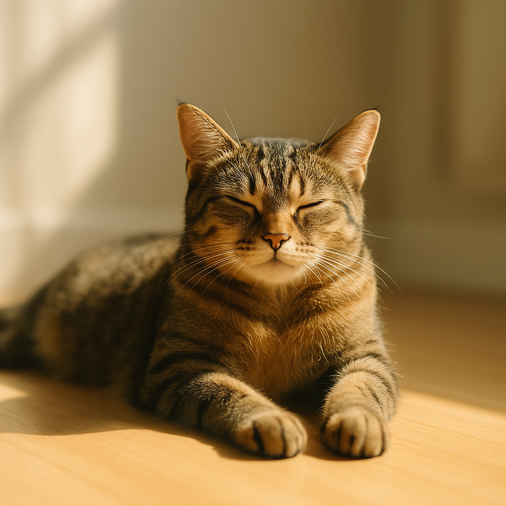

Por que os gatos são tão viciados em sol? ☀️🐾

Por Plantas & Gatos - Seu guia de confiança sobre cuidados e comportamento felino
Se você convive com gatos, provavelmente já reparou que eles seguem os raios de sol pela casa como verdadeiros especialistas em conforto. Basta uma nesga de luz atravessar a janela para que seu felino se instale, estique as patinhas e aproveite o calorzinho com a cara mais zen do mundo. Mas afinal, por que os gatos são tão apaixonados pelo sol?
A resposta é uma mistura fascinante de ciência, instinto e pura genialidade felina. Aqui estão os motivos que transformam nossos bichanos em verdadeiros adoradores solares:
🌡️ Termorregulação de Alto Nível
O corpo dos gatos é uma obra-prima da eficiência. Quando eles se deitam ao sol, estão aproveitando uma fonte de calor externa sem queimar energia interna — é como ganhar um aquecedor gratuito e ecológico.
A temperatura corporal normal dos gatos fica entre 38 e 39°C (mais alta que a nossa), e manter esse padrão consome muita energia. Ao se aquecer naturalmente com os raios solares, eles liberam o metabolismo para outras funções vitais. É praticamente um hack biológico que a evolução desenvolveu ao longo de milhões de anos.
⚡ Sistema de Recarga Natural
Enquanto estão ali, completamente relaxados no sol, acontece algo incrível: os músculos se descontraem totalmente, a frequência cardíaca diminui e o gasto calórico despenca. O resultado? Mais energia armazenada para as aventuras noturnas — aquelas corridas pela casa às três da manhã, saltos impossíveis no sofá ou caçadas épicas contra brinquedinhos.
Estudos mostram que gatos podem dormir até 16 horas por dia, e grande parte desse descanso acontece justamente nos "pontos solares" da casa. É a versão felina de carregar a bateria no modo turbo.
🏜️ Herança dos Ancestrais do Deserto
Os gatos domésticos descendem do gato-do-deserto africano (Felis lybica), que evoluiu em ambientes com temperaturas altíssimas durante o dia. Essa memória genética explica por que nossos felinos modernos ainda procuram instintivamente o calor — mesmo vivendo em apartamentos com ar-condicionado.
Interessante notar que gatos preferem temperaturas entre 30 e 36°C (que para nós seria um calor meio sufocante). É por isso que eles disputam aquela faixa de sol que atravessa a janela, se espremem em cima do notebook quente ou se instalam pertinho do radiador no inverno.
🕐 O Cronograma Solar Secreto
Observe seu gato durante um dia inteiro e você descobrirá algo surpreendente: eles têm uma agenda solar mais precisa que um relógio suíço. Começam a manhã na janela leste, migram para o centro da casa ao meio-dia e terminam a tarde na sala, sempre seguindo o trajeto da luz natural.
Alguns gatos chegam a se posicionar nos locais certos até 10 minutos antes do sol chegar — como se tivessem um GPS interno calibrado com a rotação da Terra. Cientistas acreditam que isso acontece porque os felinos são extremamente sensíveis às variações de temperatura e luminosidade do ambiente.
💡 Benefícios Extras do Banho de Sol
Além de todos esses motivos práticos, a exposição solar também:
- Estimula a produção de vitamina D (assim como em humanos)
- Melhora o humor felino através da liberação de serotonina
- Ajuda na manutenção do pelo, mantendo-o saudável e brilhante
- Fortalece o sistema imunológico através de processos bioquímicos naturais
🐱 O Gênio Por Trás da Preguiça
Da próxima vez que encontrar seu gato esparramado naquela faixa de luz dourada da tarde, com aquela expressão de pura felicidade, lembre-se: ele não está apenas sendo "preguiçoso". Está executando uma estratégia de sobrevivência milenar, otimizando energia, regulando temperatura e aproveitando benefícios que nós, humanos, ainda estamos descobrindo.
É pura genialidade disfarçada de fofura — e talvez seja exatamente isso que torna os gatos tão irresistíveis. Eles transformaram o ato de "não fazer nada" em uma arte refinada de viver bem. 🐱✨
← Voltar para o blog